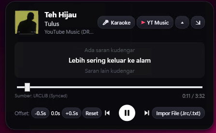

DRANOTCH menghadirkan pengalaman Dynamic Bezel Notch bernuansa hitam OLED yang menyatu mulus dengan bingkai atas monitor Anda. Mengintegrasikan Smart Media Player & Lirik Karaoke, Jadwal Waktu Sholat & Pengingat Adzan, Cloud To-Do List (Google Drive Sync), serta Browser Mengambang (PiP) dalam satu aplikasi ringan.


Mengubah ruang kosong di tepi atas monitor Windows menjadi asisten produktivitas dan hiburan yang selalu siap diakses tanpa mengganggu pekerjaan utama Anda.
Dirancang menempel langsung (flush, Top = 0) di tepi atas layar dengan bahu lengkung cekung (concave ears) di kiri-kanan atas dan fitur auto-dock saat digeser antar monitor.
Palet warna hitam pekat (#050507) dengan aksen kontras tajam yang nyaman di mata saat bekerja malam hari serta menyatu sempurna dengan bingkai fisik monitor.
Dilengkapi Intelligent Hover Delay (650ms) agar notch tidak terbuka secara tidak sengaja saat kursor hanya melintas cepat, serta opsi Pin (📌) untuk mengunci panel tetap terbuka.
Setiap komponen dapat disatukan di dalam kapsul Notch utama atau dilepas (⧉) menjadi jendela mengambang mandiri di posisi mana pun, bahkan di monitor kedua.
Seluruh fitur dirancang saling terhubung secara harmonis di dalam satu aplikasi.
Pusat kendali musik universal yang terhubung langsung ke Windows System Media Transport Controls (SMTC) dan database lirik sinkronisasi.
♪) tanpa perlu memperluas panel.-0.5s / +0.5s), serta impor file .lrc dan .txt lokal.Pendamping pengingat ibadah harian yang presisi bagi pengguna di seluruh wilayah waktu Indonesia (WIB, WITA, WIT) maupun koordinat global.
🕌 Dzuhur 11:52 (-18m)) dari mode compact, lihat tabel lengkap di mode expanded, atau lepas menjadi PrayerWindow mandiri.Manajer tugas produktif yang selalu terlihat di atas layar dengan sinkronisasi awan lintas komputer secara real-time.
✓).⋮⋮): Geser tugas ke atas atau ke bawah secara visual untuk menyusun prioritas harian Anda.#KERJA, #KULIAH, #PRIBADI), dan saring dengan tab Semua / Aktif / Selesai.Peramban web dan pemutar video mengambang berbasis Microsoft Edge WebView2 yang dirancang khusus untuk multitasking.
⋮⋮ Geser dan bingkai pelindung resize sehingga jendela tidak pernah macet meski sedang memutar video layar penuh.📐): Ubah ukuran jendela secara presisi dalam 1 klik: Mini PiP (360×202), Kecil (480×270), Sedang (720×405), Standar (960×540), hingga Layar HD (1280×720).▲): Kolom omnibox pencarian/URL penuh yang bersih, tombol Pin Always on Top (📌), serta tombol sembunyikan bar navigasi untuk tampilan video murni.Klik pada gambar untuk memperbesar tampilan resolusi penuh.

Kapsul ramping di tepi atas layar berisi info lagu, lirik berjalan saat standby, hitung mundur waktu sholat, dan live ticker tugas aktif.
Panel penuh yang menampilkan Pemutar Musik & Lirik, Jadwal Waktu Sholat harian, serta Cloud To-Do List secara berdampingan.

Layar fokus lirik dengan dukungan Click-Through serta fleksibilitas melepas Waktu Sholat dan To-Do List menjadi jendela mandiri.

Jendela web & video streaming Always-on-Top dengan omnibox penuh, preset ukuran 16:9, dan in-window fullscreen.
Rangkuman perkembangan DRANOTCH dari versi awal hingga ekosistem 4-komponen saat ini.
Memperbesar ukuran Notch bergaya MacBook Pro dengan bingkai Specular Rim dan tipografi Segoe UI Variable Display, memposisikan Notch selalu presisi di tengah-atas saat minimize, menambahkan kapsul komponen ke-4 (Browser) beserta pembatas di samping To-Do List, mengganti seluruh ikon komponen dengan ikon vektor Silver Metallic yang serasi dengan logo DRANOTCH, serta memperbarui tampilan panggung lirik tanpa tombol Click-Through.
Transformasi siluet kapsul menjadi menyatu langsung ke tepi atas layar Windows (Top = 0) dengan bahu lengkung cekung (concave ears), auto-dock ke bezel atas, serta penyederhanaan antarmuka Browser Mengambang (omnibox penuh & tombol Pin ikonik).
Menambahkan komponen ke-4 berupa Browser Mengambang berbasis WebView2 dengan In-Window Fullscreen, grip geser permanen (⋮⋮ Geser), preset rasio video 16:9 instan, dan mode Always on Top.
Menyatukan Musik, Waktu Sholat, dan To-Do List berdampingan di mode Expanded; fitur Drag & Drop urutan tugas; Inline Editing klik ganda; sinkronisasi real-time otomatis antar beberapa komputer via Google Drive; manajer komponen simbolik (🍱); serta sertifikat digital SHA-256 resmi.
Integrasi perhitungan waktu sholat standar Kemenag RI / MABIMS untuk 40+ kota Indonesia & deteksi IP, kalender Hijriah, pengingat 3 tahap (sebelum, saat adzan, sesudah), serta fitur auto-pause musik saat adzan.
Fondasi Dynamic Island Windows dengan deteksi sesi media otomatis, lirik sinkronisasi LRCLIB, mode lirik Click-Through, To-Do List yang dapat dilepas (detachable) dengan backup Google Drive, aplikasi In-App Auto Updater, serta tema monokrom OLED.

| Pintasan / Aksi | Fungsi |
|---|---|
| Ctrl + Alt + N | Tampilkan / Sembunyikan panel DRANOTCH (dapat diubah di Pengaturan) |
| Ctrl + Alt + L | Buka / Tutup Mode Layar Lirik Karaoke |
| Klik Kiri & Geser Notch | Geser posisi horizontal notch di sepanjang tepi atas layar / antar monitor |
| Klik Kanan Notch | Menu cepat: Perluas/Perkecil Panel, Pengaturan, atau Keluar Aplikasi |
| Klik Ganda Teks Tugas | Edit teks tugas To-Do secara langsung (Enter simpan, Esc batal) |
| Esc (di Browser) | Keluar dari mode In-Window Fullscreen |
Dibangun menggunakan .NET 10 & WPF (Windows Presentation Foundation) dengan kompilasi Self-Contained Single-File (tidak perlu menginstal runtime .NET terpisah), Windows System Media Transport Controls API, Microsoft Edge WebView2, LRCLIB Lyrics API, Google Drive REST API v3, serta paket instalasi Inno Setup 6.
1. Unduh installer terbaru DRANOTCH-Setup-1.5.2.exe lalu jalankan.
2. Catatan Windows SmartScreen: Jika muncul layar informasi biru saat instalasi pertama, klik "More info" lalu klik "Run anyway" (atau jalankan berkas Install-Certificate.bat di halaman rilis untuk mendaftarkan sertifikat digital DRANOTCH secara permanen).
3. Untuk pembaruan versi selanjutnya, Anda cukup menekan tombol Periksa Pembaruan / Update langsung dari dalam menu Pengaturan aplikasi!